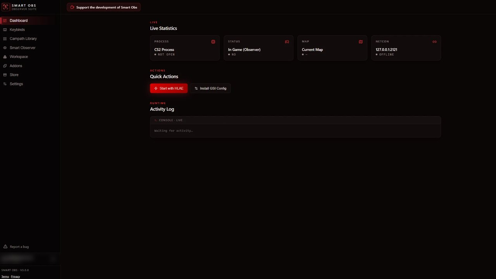

Smart Obs
Smart observing for Counter-Strike 2. It suggests the campath that fits the moment, checks that the shot can really see the action, and puts cinematic camera work on a button, so you stay the one directing the game. Not a replacement for an observer, a second pair of hands.
Free during early access. The MCR Pack of 215 campaths installs from inside the app.
- 215
- free campaths in the app
- 9
- competitive maps
- 1
- key to fly any of them
The idea
What am I trying to do?
I am not trying to replace observers with AI. Quite the opposite: I want to help observers get the best out of themselves, whether they are working alone without a cinematic observer, or they simply prefer to do it themselves. Smart Obs should help you combine both, and still let you be the one behind it.
The centrepiece
Smart Observer helps you pick the shot.
It watches the round and suggests the campath that fits it, then waits. Press Play and it flies, or ignore it and keep observing by hand. It also puts the camera work on hotkeys: follow a grenade, lock onto a player, or take a smooth free camera for a cinematic.
01
It suggests
Reads the round and picks from the campaths you have loaded. Nothing moves until you press Play.
02
It checks the shot
It knows each map's real walls and floors, so it only suggests a shot that can actually see the player, not one that films the wall in front of them.
03
Smooth camera
One mouse button puts the camera behind the player, the other in front. Fly a cinematic, then press again to land on the nearest player.
04
On a key
Play the suggestion on Num 7, lock onto a player on Num 8, follow a grenade on Num 9, smooth camera on Mouse 4 and 5. All rebindable.
Player Camera
Freezetime rotation
Every round opens on a different authored position instead of the same stale angle.
Right shot, right time
Round-start transitions only at the start of a round, site shots once the bomb is down.
Timeout campaths
Pause paths are kept for real timeouts, so they never fire during live play.
Your colours
Seven themes, from the classic red to dark and white, across every window.
The app
Everything in one window.
A dashboard for the live match, Smart Observer and the camera controls, your keybinds, and the plumbing (HLAE, BoltObserv, configs) handled for you.

Live process, map and netcon state, with an activity log of every action fired.
Free early access
Get Smart Obs.
Smart Obs is free during early access. Download it, create an account with your email, and you are in. The MCR Pack, 215 campaths across nine maps, installs from the app's Store in one click. Windows 10 or 11 and Counter-Strike 2 required; HLAE installs from inside the app.
Download for Windows
One installer, about 25 MB. It updates itself when a new version is out.
Thank you
Standing on the shoulders of two great tools.
Smart Obs would not exist without the open-source work below. It installs and drives them for you, but the credit for what they do belongs to their authors.
HLAE
Half-Life Advanced Effects by advancedfx: the campaths, the camera control and the scripting that every camera in Smart Obs is built on.
BoltObserv
The live radar and minimap by boltgolt, embedded in the Workspace so the whole map is in view while you direct.
If Smart Obs helps you, consider supporting these projects too. Neither is affiliated with Smart Obs.